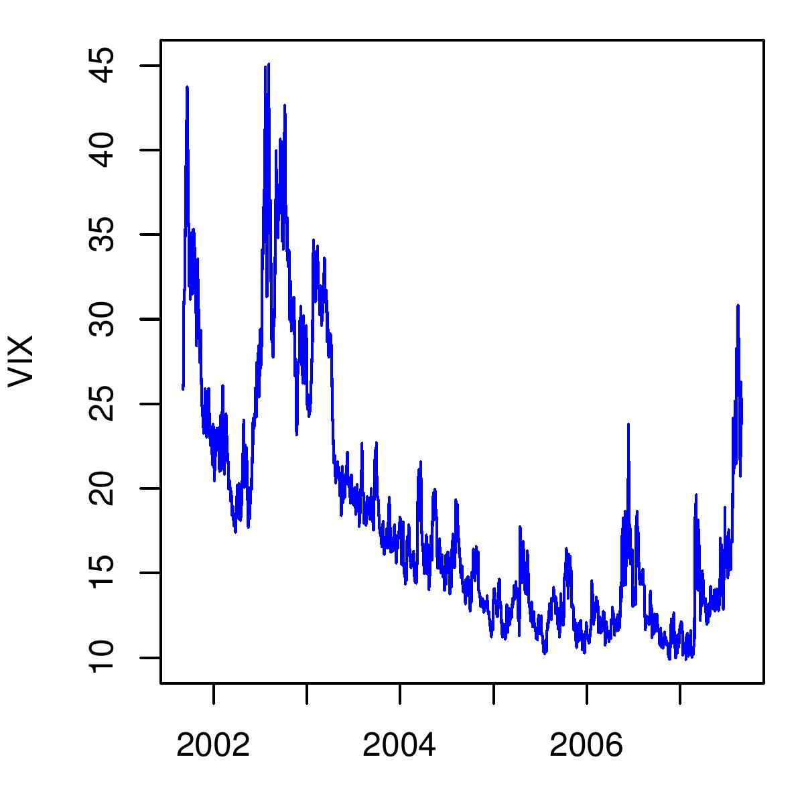

The fear index
Indian Express, 22 August 2007
 The last four weeks have seen very sharp movements in stock prices around the world. From a relatively peaceful environment when most people thought that stock markets were going to be calm, there has, after the developments in the US subprime market and its impact, been a change in the perception of how the market will behave. The change in the market's view about future volatility is measured by an index called the VIX. The VIX has sometimes been described as the fear index, measuring uncertaintly and investor fear.
What is the VIX? The VIX is an index in the US which measures the market's view about future volatility. "VIX" is the ticker symbol for the Chicago Board Options Exchange Volatility Index. It is a forward-looking measure - it reflects what the market thinks the volatility of the S&P 500 index, the stock market index for the biggest 500 US companies, will be over the next one month. This is important for the world economy, including India, because the S&P 500 index is almost entirely multinationals, with global operations.
A low level of VIX implies that returns from the market will lie within a narrow band. When the VIX goes up, it suggests that returns on stock prices are likely to be in a much higher band, much more volatile, in other words. So when the VIX is at 10, this means that index returns over the coming year are likely to lie within a band which is 40 percentage points wide. In constrast, when the VIX is at 20, it means that index returns over the coming year are likely to lie within a band of 80 percentage points.
How has the VIX behaved in recent times? As the graph shows, VIX rose sharply from roughly 25 at the start of September 2001 to a level of 42 after the 9/11 attacks. Implied volatility then subsided a bit, but rose sharply when there were fears of a global recession in 2002 and 2003.
After that, the VIX went through an unprecedented and sustained decline, to a low of 9.89. From 2004 to 2006, it remained low and calm, which supported high asset prices and high investment all over the world. Many economists warned that this tranquility was almost dangerous as it encouraged excessive risk-taking. When the market is complacent about the future it suggests that people feel that it is unlikely that returns from investment will be low. This encourages them to invest more in risky assets.
This period of an complacence appears to have ended. From a level of 15.23 on 19 July, VIX has reared up sharply to a level of 30 one month later. In coming days, the VIX will be a most-watched measure of risk perception about the world economy.
How is the VIX constructed? Options on the S&P 500 are traded on the Chicago Board Options Exchange (CBOE). The option prices seen on the market imply a value for the future volatility that traders must have on their mind when trading the options. This value is reverse engineered out of the observed option prices, thus giving the VIX, in real time.
Back up to Ila Patnaik's media page
Back up to Ila Patnaik's home page